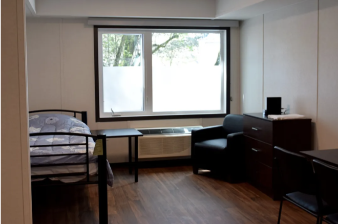
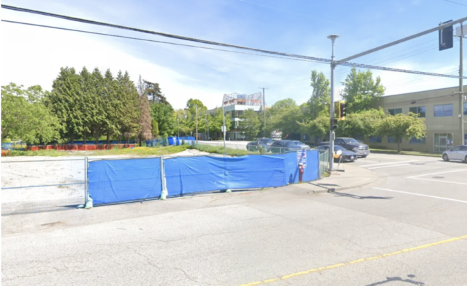
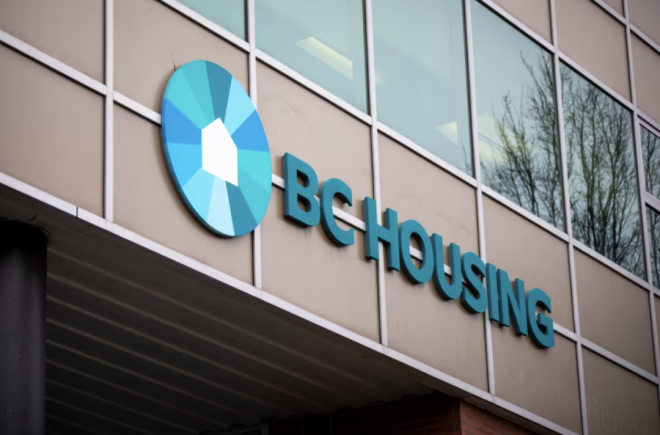
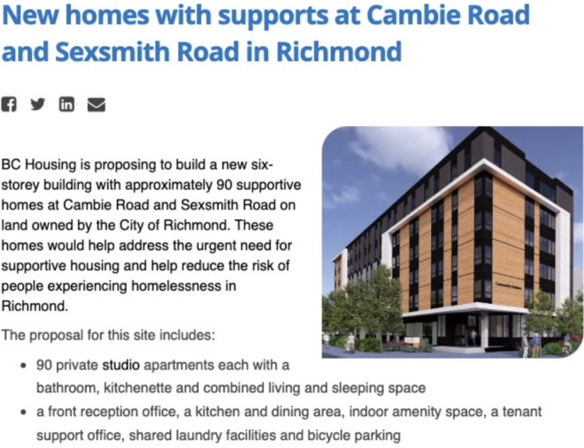
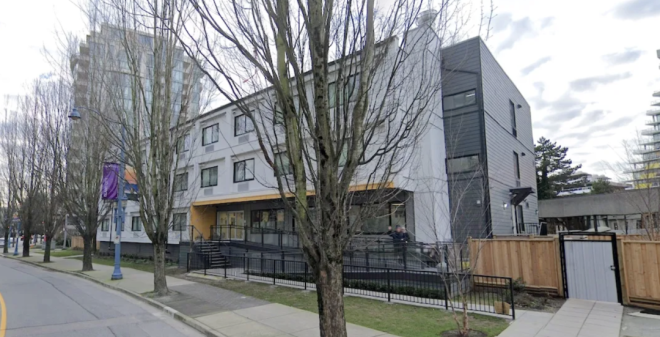

自从今年6月24日，BC Housing申请在列治文繁忙路段Cambie & Sexsmith建设一栋有90套住宅的永久社会保障屋（Social Housing）之后，列治文的抗议声就没停过。
数十名列治文居民7月31日下午在Aberdeen社区公园集会，反对列市府计划在中心地带建设永久性支援房屋(Supportive Housing)；认为政府操作不足够透明，未确保周边居民和商户知悉详情。
Social Housing社会保障屋，在BC省主要是给低收入人士、单身成年人、老年人、残疾人提供的福利住房，但在很多人看来，社会保障屋“另有其意”，往往住在里面的是一些瘾君子、流浪汉、心术不正者。
而被选定盖保障屋的地址，是列治文闹市商圈，距离时代坊、太古广场和金钟廊都很近 。 这保障屋建起来后，男女老少都爱的食街、统一广场、置地广场等商圈也难免不受影响。
集会发起人Sheldon Starrett、赖彦宏以及公寓Avanti和Fiorella代表于7月26日在网上发起请愿，截至集会当天，有超过3300人签名。请愿书中写道，身为列治文居民“对于在列治文中心地带，即Cambie和Sexsmith交界处，提议建设一栋6层楼高的永久性保障屋，深感担忧。这个拥有90个单位的项目将成为省内最大的‘减害(harm-reduction)’设施之一，规模超过列治文目前的两个临时组合屋设施的总和。”
请愿书中还提及，住在Alderbridge临时组合屋附近的经验，周边居民亲眼见证了过去5年这个设施对列治文市中心区域造成的影响，包括“不断的毒品交易、毒品使用者的威胁，以及在私人住宅和商业场所公开使用毒品。这导致了公共秩序的崩溃和毒品使用的失控。”
Aberdeen社区公园周边公寓的物管经理Mahdi Torabi昨日在现场激动地说：“关于这个项目的争论，我想提供一个社区视角。请想像一下，在公园的周边建设这样一个设施，最黑暗的后果就是有人会在公园里吸毒。这个公园是长者散步的地方，是母亲带着孩子休闲娱乐的地方。”

据悉，Cambie & Sexsmith的这套社会保障房总计6层楼，90套住宅都是Studio户型，包含卧室、独立浴室、小厨房，社会保障房还提供了公共用餐区、室内便利空间、公共洗衣房、自行车停车场等等配备。
通过地图可见，拟建社会保障屋的地点距离华人非常喜爱“遛娃”、娱乐的Aberdeen社区公园只有一街之隔，而这也会成为该社会保障屋居民的首选“遛弯”场所。

在保障屋和社区公园之间，则是华人常去的置地广场，里面有众多中餐选择，也有不少教育机构。虽然距离天车站仍有一定距离，但总体地段仍然是比较好的。
他们宣布将在8月10日举行公开集会，反对Cambie街的社会保障屋项目。
在新闻稿中，Sheldon Starrett明确表示：“根据列治文目前已经建成的社会保障房状况来看，对周边居民的负面影响是显而易见的。居民认为该项目应该停止，并且相关项目应该彻底在列治文市中心区域停止。”
“除非市政府制定更全面的战略、进行更严格的审核机制来确保不影响周边居民生活，这种社会保障房的项目才是可行的。”

Torabi补充说，在Aberdeen社区公园周边有超过2000个家庭和超过8000名住户。而列治文市府针对该项目仅在一个网站上向市民收集意见并已经关闭，且未提供太多细节。
他进一步说，当政府要建一个天车站的时候，会一遍遍发出实体的信件，告知受影响的民众。而此次他是于7月24日从朋友处听说了这个消息，而当他上网查询该项目时，发现对该项目的描述很模糊且不一致。

他指：“BC Housing将这个项目描述为史上最好的设施，而列治文市府的描述中出现了‘homeless’的字眼，我意识到政府在隐瞒着我们做一些事情。”
据列治文市府公众咨询网站letstalkrichmond有关项目的资料显示，该项目为“有助于满足支持性住房的迫切需求，并有助于减少列治文无家可归者的风险。”
金钟廊的商户朱女士也表示，金钟廊上百间店铺均未收到任何与该项目有关的通知。她说：“周边地块的用途发生如此之大的改变，他们有权利被告知详情，而我们都是前几天通过看新闻才知悉这一消息。”
在社会保障房问题上，双方的争议几乎完全一致：市政府、BC Housing反复强调社会保障房是为了给低收入者、老年人、残疾人有家可住，是为了救他们，但反对者却反复强调“实际住进来的，都是会给正常人生活带来威胁的不安定分子。”
就算有所谓的法律法规来约束，但实际操作起来却总是和当初宣扬的不一样。此前被广泛反对，但最终还是建成的Alderbridge Way临时组合屋，就是典型的反面教材：

正如Sheldon Starrett所描述的那样，该组合屋周边毒品交易不断、大麻味挥之不去，还有人聚集在周边的商业场所公开使用毒品。
在反对者看来，列治文政府、BC Housing们所说的“误导”，根本就不是误导，因为他们的保障房确实给社区带来了不稳定因素，更何况列治文这几年治安的退步大家都看在眼里。
得知这一消息后，金钟廊的商家都很恐慌，一致反对，“因为担心一旦建造了这个设施，会将其他区域的毒品使用者引流过来，影响本地社区的安全和周边的商业环境。”
针对列治文要建新的保障屋一事，华人网友纷纷表示要极力抗议：
原本流浪汉聚居的是温东唐人街，现在政府把他们引向华人新的家园列治文，真是一言难尽。
BC省华裔议员屈洁冰也坦言：“列治文人并非不支持保障住房，因为这是一个好的概念，体现了政府的包容心。可问题是，信息不公开透明，而且社会保障房也没有聆听民意，像是强加于列治文，那人们的反对是能理解的。”